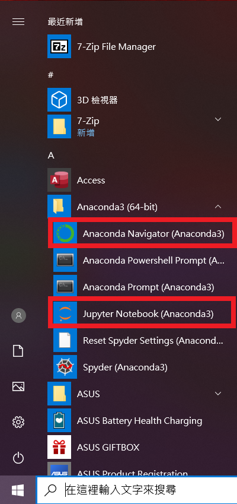
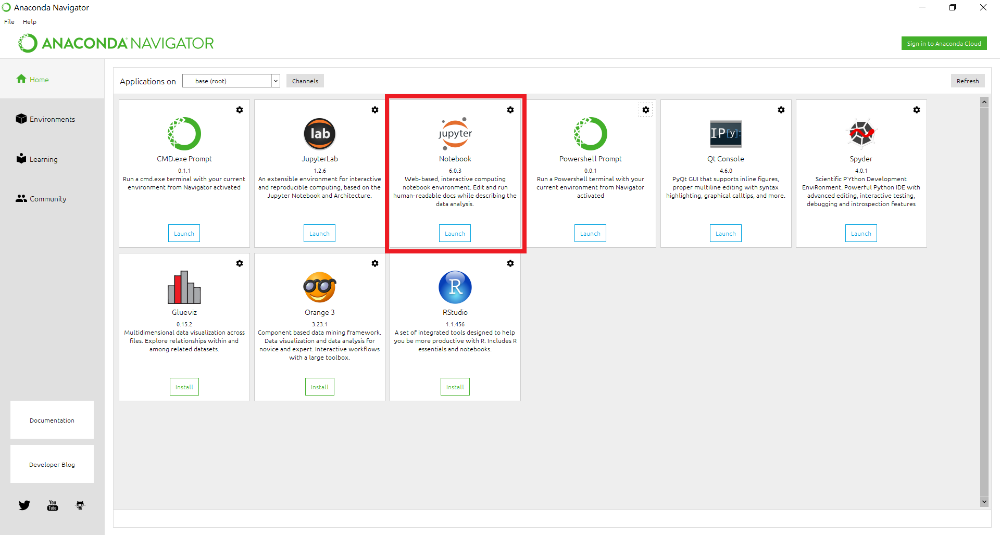
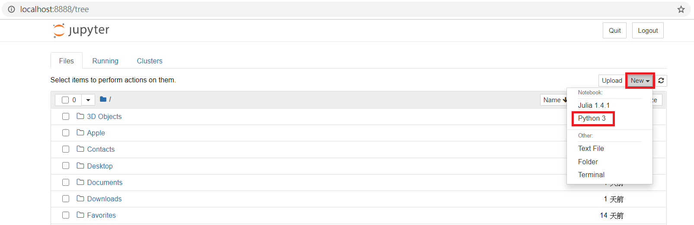
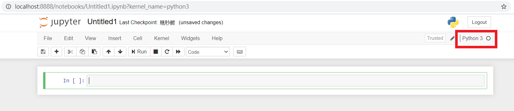

1 Anaconda安裝（Anaconda Installation）
1.1 何謂Anaconda
開源軟件常有不同模組套件間的相互依賴（interdependence）等問題，因此有人就將較為相容者整理為某個發行（distribution），例如Linux就有Ubuntu、Debian、CentOS、Fedora等發行，而Python一樣也有多個發行，其中一個常見的就是Anaconda。
1.2 Anaconda安裝
這在網上已有很多說明，此處列舉幾個供參，基本上照著做就可以了：
1.3 何謂Jupyter
Jupyter是一種互動式記事本（interactive notebook），使用它可以立即得到（互動）操作結果。
1.4 開啟Jupyter
此處以Windows為例：
開始＞Anaconda3，選取「Anaconda Navigator」或直接點擊「Jupyter Notebook」 
如上步驟選取「Anaconda Navigator」此處再點「Jupyter Notebook」 
開啟如下畫面，新增（new）一個「Python 3」的筆記 
新的空白筆記畫面如下 
1.5 Jupyter教學
這裡找到一篇貼文最詳盡使用指南：超快上手 Jupyter Notebook供參，如果沒能全部理解內容也沒關係，先感覺一下它大概怎麼用就行了。
1.6 學習要點
- 學會安裝Python的Anaconda發行。
- 學會開啟Jupyter並能新增Python記事本。
1.7 自我練習
嘗試安裝Python的Anaconda發行，開啟Jupyter，新增一個Python的記事本，參考前段Jupyter教學內容，操作一下玩玩看。